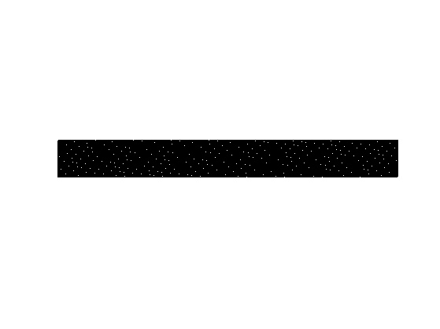
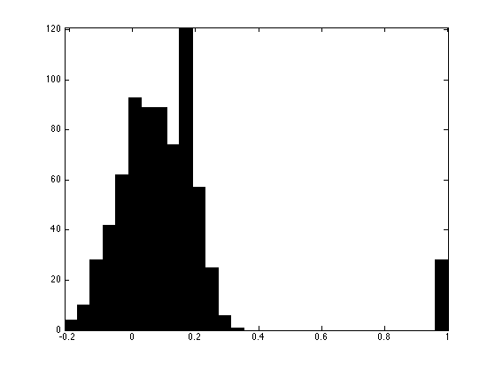
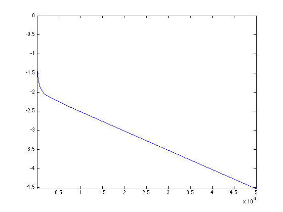
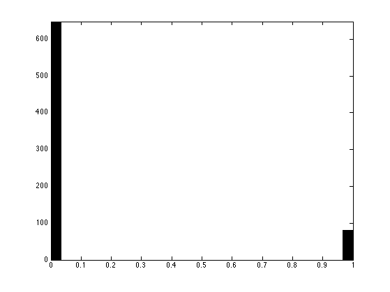
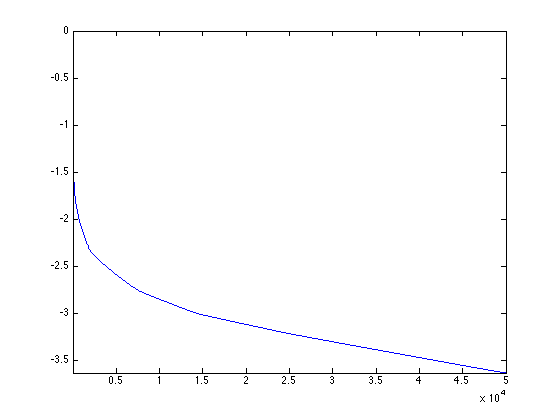
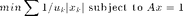
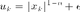
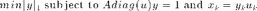
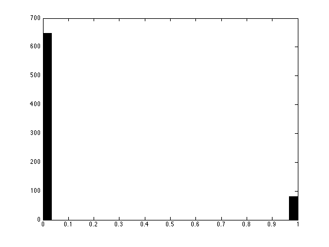
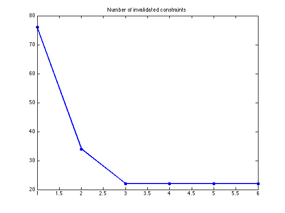

Sudoku using POCS and Sparsity
This numerical tour explores the use of numerical schemes to solve the Sudoku game.
Contents
- Installing toolboxes and setting up the path.
- Game Encoding and Decoding
- Encoding Constraints
- Sudoku Rules Constraints
- Inpainting Constraint
- Solving the Sudoku by Binary Integer Programming
- Removing the Binary Constraint
- Solving the Sudoku by Projection on Convex Sets
- Decoding Using L1 Sparsity
- Decoding Using more Aggressive Sparsity
This tour was written by Yue M. Lu and Gabriel Peyré.
The idea of encoding the Sudoku rule using a higer dimensional lifting, linear constraints and binary constraint is explained in:
Andrew C. Bartlett, Amy N. Langville, An Integer Programming Model for the Sudoku Problem, The Journal of Online Mathematics and Its Applications, Volume 8. May 2008.
The idea of removing the binary constraint and using sparsity constraint is exposed in:
P. Babu, K. Pelckmans, P. Stoica, and J. Li, Linear Systems, Sparse Solutions, and Sudoku, IEEE Signal Processing Letters, vol. 17, no. 1, pp. 40-42, 2010.
This tour elaborarates on these two ideas. In particular it explains why \(L^1\) minimization is equivalent to a POCS (projection on convex sets) method to find a feasible point inside a convex polytope.
Installing toolboxes and setting up the path.
You need to download the following files: signal toolbox and general toolbox.
You need to unzip these toolboxes in your working directory, so that you have toolbox_signal and toolbox_general in your directory.
For Scilab user: you must replace the Matlab comment '%' by its Scilab counterpart '//'.
Recommandation: You should create a text file named for instance numericaltour.sce (in Scilab) or numericaltour.m (in Matlab) to write all the Scilab/Matlab command you want to execute. Then, simply run exec('numericaltour.sce'); (in Scilab) or numericaltour; (in Matlab) to run the commands.
Execute this line only if you are using Matlab.
getd = @(p)path(p,path); % scilab users must *not* execute this
Then you can add the toolboxes to the path.
getd('toolbox_signal/'); getd('toolbox_general/');
Game Encoding and Decoding
The basic idea is to use a higher dimensional space of size (n,n,n) to represent a Sudoku matrix of size (n,n). In this space, the arrays are constrained to have binary entries.
Size of the Sudoku. This number must be a square.
n = 9;
Create a random integer matrix with entries in 1...9.
x = floor(rand(n)*n)+1;
Comparison matrix used for encoding to binary format.
U = repmat( reshape(1:n, [1 1 n]), n,n );
Encoding in binary format.
encode = @(x)double( repmat(x, [1 1 n])==U ); X = encode(x);
The resulting matrix has binary entries and has size (n,n,n). One has x(i,j)=k if X(i,j,k)=1 and X(i,j,l)=0 for l~=k.
Decoding from binary format. One use a min to be able to recover even if the matrix X is not binary (because of computation errors).
[tmp,x1] = min( abs(X-1), [], 3 );
Show that decoding is ok.
disp(['Should be 0: ' num2str(norm(x-x1,'fro')) '.']);
Should be 0: 0.
Encoding Constraints
For X to be a valid encoded matrix, it should be binary and satifies that each X(i,j,:) contains only a single 1, which can be represented using a linear contraint Aenc*X(:)=1.
Now we construct one encoding constraint.
i = 4; j = 4; Z = zeros(n,n,n); Z(i,j,:) = 1;
Add this constraint to the encoding constraint matrix.
Aenc = []; Aenc(end+1,:) = Z(:)';
Show that constraint is satisfied.
disp(['Should be 1: ' num2str(Aenc*X(:)) '.']);
Should be 1: 1.
Exercice 1: (check the solution) Build the encoding matrix Aenc. Display it.
exo1;
Show that constraint Aenc*X(:)=1 is satisfied.
disp(['Should be 0: ' num2str(norm(Aenc*X(:)-1)) '.']);
Should be 0: 0.
Sudoku Rules Constraints
In a Sudoku valid matrix x, each column, row and sub-square of x should contains all the values in 0...n. This can be encoded on the high dimensional X using linear constraints Arow*X=1, Acol*X=1 and Ablock*X=1.
A valid Sudoku matrix.
x = [8 1 9 6 7 4 3 2 5;
5 6 3 2 8 1 9 4 7;
7 4 2 5 9 3 6 8 1;
6 3 8 9 4 5 1 7 2;
9 7 1 3 2 8 4 5 6;
2 5 4 1 6 7 8 9 3;
1 8 5 7 3 9 2 6 4;
3 9 6 4 5 2 7 1 8;
4 2 7 8 1 6 5 3 9]
x =
8 1 9 6 7 4 3 2 5
5 6 3 2 8 1 9 4 7
7 4 2 5 9 3 6 8 1
6 3 8 9 4 5 1 7 2
9 7 1 3 2 8 4 5 6
2 5 4 1 6 7 8 9 3
1 8 5 7 3 9 2 6 4
3 9 6 4 5 2 7 1 8
4 2 7 8 1 6 5 3 9
Encode it in binary format.
X = encode(x);
Select the index of the entries of a row.
i=3; k=5; Z = zeros(n,n,n); Z(i,:,k) = 1;
Fill the first entries of the row matrix.
Arow = []; Arow(end+1,:) = Z(:)';
Show that constraint is satisfied.
disp(['Should be 1: ' num2str(Arow*X(:)) '.']);
Should be 1: 1.
Exercice 2: (check the solution) Build the full row matrix Arow. Display it.
exo2;
Show that constraint Arow*X(:)=1 is satisfied.
disp(['Should be 0: ' num2str(norm(Arow*X(:)-1)) '.']);
Should be 0: 0.
Exercice 3: (check the solution) Build the full column matrix Acol. Display it.
exo3;
Show that constraint Acol*X(:)=1 is satisfied.
disp(['Should be 0: ' num2str(norm(Acol*X(:)-1)) '.']);
Should be 0: 0.
Now we proceed to block constraints.
Size of a block.
p = sqrt(n);
The upper left square should contain all numbers in {1,...,n}.
k = 1; Z = zeros(n,n,n); Z(1:p,1:p,k) = 1;
Add it as the first row of the block constraint matrix.
Ablock = []; Ablock(end+1,:) = Z(:)';
Show that constraint is satisfied.
disp(['Should be 1: ' num2str(Ablock*X(:)) '.']);
Should be 1: 1.
Exercice 4: (check the solution) Create the full block matrix. Display it.
exo4;
Show that constraint Ablock*X(:)=1 is satisfied.
disp(['Should be 0: ' num2str(norm(Ablock*X(:)-1)) '.']);
Should be 0: 0.
Inpainting Constraint
A Sudoku game asks to fill the missing entries of a partial Sudoku matrix x1 to obtain a full Sudoku matrix x.
The fact that for each available entry (i,j) on must have x(i,j)=x1(i,j) can be encoded using a linear constraint.
Load a Sudoku with missing entries, that are represented as 0. This is an easy grid.
x1 = [0 1 0 0 0 0 3 0 0;
0 0 3 0 8 0 0 4 0;
7 0 2 0 0 3 0 0 1;
0 3 0 9 4 0 1 0 0;
9 0 0 0 0 0 0 0 6;
0 0 4 0 6 7 0 9 0;
1 0 0 7 0 0 2 0 4;
0 9 0 0 5 0 7 0 0;
0 0 7 0 0 0 0 3 0];
Retrieve the indexes of the available entries.
[I,J] = ind2sub( [n n], find(x1(:)~=0) ); v = x1(x1(:)~=0);
Create a vector corresponding to the constraint that x1(I(i),J(i))==v(i).
i = 1; Z = zeros(n,n,n); Z(I(i), J(i), v(i)) = 1;
Fill the first entries of the row matrix.
Ainp = []; Ainp(end+1,:) = Z(:)';
Exercice 5: (check the solution) Build the full inpainting matrix Ainp. Display it.
exo5;
Show that constraint Ainp*X1(:)=1 is satisfied.
X1 = encode(x1); disp(['Should be 0: ' num2str(norm(Ainp*X1(:)-1)) '.']);
Should be 0: 0.
Solving the Sudoku by Binary Integer Programming
The whole set of constraints can be written A*X(:)=1, where the matrix A is defined as a concatenation of all the constraint matrices.
A = [Aenc; Arow; Acol; Ablock; Ainp];
Pre-compute the pseudo-inverse of A.
pA = pinv(A);
If the Sudoku game has an unique solution x, then the corresponding lifted vector X is the only solution to A*X(:)=1 under the constraint that X is binary.
This is the idea proposed in:
Andrew C. Bartlett, Amy N. Langville, An Integer Programming Model for the Sudoku Problem, The Journal of Online Mathematics and Its Applications, Volume 8. May 2008.
Unfortunately, solving a linear system under binary constraints is difficult, in fact solving a general integer program is known to be NP-hard. It means that such a method is very slow to solve Sudoku for large n.
One can use branch-and-bounbs methods to solve the binary integer program, but this might be slow. One can use for instance the command bintprog of Matlab (optimization toolbox), with an arbitrary objective function (since one wants to solve a feasability problem, no objective is needed).
Exercice 6: (check the solution) Implement the Soduku solver using an interger linear programming algorithm.
exo6;
Removing the Binary Constraint
If one removes the binary constraint, one simply wants to compute a solution to the linear system A*X(:)=1. But unfortunately it has an infinite number of solutions (and the set of solutions is not bounded).
It is thus unlikely that chosing a solution at random will work, but let's try it by projecting any vector on the constraint A*X(:)=1.
First define the orthogonal projector on the constraint {X \ A*X(:)=1}.
projector = @(u)reshape( u(:) - pA*(A*u(:)-1), [n n n]);
We project an arbitrary vector (that does not satisfy the constraint) onto the constraint A*X(:)=1.
Xproj = projector( zeros(n,n,n) );
Check that Xproj projects onto itself because it satisfies the constraints.
d = projector(Xproj)-Xproj; disp(['Should be 0: ' num2str(norm(d(:), 'fro')) '.']);
Should be 0: 4.1665e-14.
Plot the histogrtam of the entries of Xproj. As you can see, they are not binary, meaning that the binary constraint is violated.
clf;
hist(Xproj(:), 30);
axis('tight');
 It is thus not a solution to the Sudoku problem. We emphasize this by counting the number of violated constraints after decoding / re-encoding.
[tmp,xproj] = min( abs(Xproj-1), [], 3 ); Xproj1 = encode(xproj); disp(['Number of violated constraints: ' num2str(sum(A*Xproj1(:)~=1)) '.']);
Number of violated constraints: 119.
Solving the Sudoku by Projection on Convex Sets
A way to improve the quality of the result is to find a vector that satisfies both A*X(:)=1 and 0<=X<=1. Note that this last constraint can be modified to X>=0 because of the fact that the entries of X(i,j,:) must sum to 1 because of A*X(:).
A way to find a point inside this polytope P = {X \ A*X(:)=1 and X>=0} is to start from a random initial guess.
Xproj = zeros(n,n,n);
And iteratively project on each constraint. This corresponds to the POCS algorithm to find a feasible point into the (non empty) intersection of convex sets.
Xproj = max( projector(Xproj),0 );
Exercice 7: (check the solution) Perform iterative projections (POCS) on the two constraints A*Xproj(:)=1 and Xproj>=0. Display the decay of the error norm(A*Xproj(:)-1) in logarithmic scale.
exo7;
Display the histogram of the recovered values.
clf;
hist(Xproj(:), 30);
axis('tight');
 As you can see, the resulting vector is (nearly, up to convergence errors of the POCS) a binary one, meaning that it is actually the (unique) solution to the Sudoku problem.
We check this by counting the number of violated constraints after decoding and re-encoding.
[tmp,xproj] = min( abs(Xproj-1), [], 3 ); Xproj1 = encode(xproj); disp(['Number of violated constraints: ' num2str(sum(A*Xproj1(:)~=1)) '.']);
Number of violated constraints: 0.
Exercice 8: (check the solution) Prove (numerically) that for this grid, the polytope of constraints P={X \ A*X(:)=1 and X>=0} is actually reduced to a singleton, which is the solution of the Sudoku problem.
exo8;
Unfortunately, this is not always the case. For more difficult grids, P might not be reduced to a singleton.
This is a difficult grid.
x1 = [0 0 3 0 0 9 0 8 1;
0 0 0 2 0 0 0 6 0;
5 0 0 0 1 0 7 0 0;
8 9 0 0 0 0 0 0 0;
0 0 5 6 0 1 2 0 0;
0 0 0 0 0 0 0 3 7;
0 0 9 0 2 0 0 0 8;
0 7 0 0 0 4 0 0 0;
2 5 0 8 0 0 6 0 0];
Exercice 9: (check the solution) Try the iterative projection on convexs set (POCS) method on this grid (remember that you need to re-define A and pA). What is your conclusion ?
exo9;
Number of violated constraints: 20.
Decoding Using L1 Sparsity
The true solution has exactly n^2 non zero entries, while a feasible point within the convex polytope P is usually not as sparse.
Compute the sparsity of a projected vector.
Xproj = projector( zeros(n,n,n) ); disp(['Sparsity: ' num2str(sum(Xproj(:)~=0)) ' (optimal: ' num2str(n*n) ').']);
Sparsity: 729 (optimal: 81).
One can prove that any solution to A*X(:)=1 has more than n^2 non zeros, and that the true Sudoku solution is the unique solution to A*X(:)=1 with n^2 entries.
One can thus (in principle) solve the Sudoku by finding the solution to A*X(:)=1 with minimal L0 norm.
Unfortunately, solving this problem is known to be in some sense NP-hard.
A classical method to approximate the solution to the minimum L0 norm problem it to replace it by a minimum L1 norm solution, which can be computed with polynomial time algorithms.
This idea is put forward in:
P. Babu, K. Pelckmans, P. Stoica, and J. Li, Linear Systems, Sparse Solutions, and Sudoku, IEEE Signal Processing Letters, vol. 17, no. 1, pp. 40-42, 2010.
The L1 norm of the Sudoku solution is n^2. The L1 norm of a projected vector is usually larger.
disp(['L1 norm: ' num2str(norm(Xproj(:),1)) ' (optimal: ' num2str(n*n) ').']);
L1 norm: 102.7585 (optimal: 81).
Unfortunately, all the vectors in the (bouned) polytope A*X(:)=1 and X>=0 has the same L1 norm, equal to 81.
This shows that the L1 minimization has the same properties as the POCS algorithm. They work if and only if the polytope is reduced to a single point.
Nevertheless, one can compute the solution with minimum L1 norm which corresponds to the Basis pursuit problem. This problem is equivalent to a linear program, and can be solved using standard interior points method (other algorithms, such as Douglas-Rachford could be used as well).
Define a shortcut for the resolution of basis pursuit.
solvel1 = @(A)reshape(perform_solve_bp(A, ones(size(A,1),1), n^3, 30, 0, 1e-10), [n n n]);
Solve the L1 minimization.
Xbp = solvel1(A);
Compute the L1 norm of the solution, to check that it is indeed equal to the minimal possible L1 norm n^2.
disp(['L1 norm: ' num2str(norm(Xbp(:),1)) ' (optimal: ' num2str(n*n) ').']);
L1 norm: 81 (optimal: 81).
Unfortunately, on this difficult problem, similarely to POCS, the L1 method does not works.
[tmp,xbp] = min( abs(Xbp-1), [], 3 ); Xbp1 = encode(xbp); disp(['Number of violated constraints: ' num2str(sum(A*Xbp1(:)~=1)) '.']);
Number of violated constraints: 16.
Decoding Using more Aggressive Sparsity
Since the L1 norm does not perform better than POCS, it is tempting to use a more agressive sparsity measure, like L^alpha norm for alpha<1.
This leads to non-convex problems, and one can compute a (not necessarily globally optimal) local minimum.
An algorithm to find a local minimum of the energy is the reweighted L1 minimization, described in:
E. J. Candès, M. Wakin and S. Boyd, Enhancing sparsity by reweighted l1 minimization, J. Fourier Anal. Appl., 14 877-905.
This idea is introduced in the paper:
P. Babu, K. Pelckmans, P. Stoica, and J. Li, Linear Systems, Sparse Solutions, and Sudoku, IEEE Signal Processing Letters, vol. 17, no. 1, pp. 40-42, 2010.
At each iteration of the algorithm, one minimizes

The weights are then updated as

The weighted L1 minimization can be recasted as a traditional L1 minimization using a change of variables.

Set the target alpha, that should be in 0<=alpha<=1.
alpha = 0;
Set the regularisation parameter epsilon, that avoids a division by zero.
epsilon = 0.1;
Initial set of weights.
u = ones(n,n,n);
Solve the weighted L1 minimization.
Xrw = solvel1( A*diag(u(:)) ) .* u;
Update the weights.
u = (abs(Xrw).^(1-alpha)+epsilon);
Exercice 10: (check the solution) Compute the solution using the reweighted L1 minimization. Track the evolution of the number of invalidated constraints as the algorithm iterates.
exo10;
Number of violated constraints: 0.
Display the histogram.
hist(Xrw(:), 30);
While reweighting L1 works for reasonnably complicated Sudoku, it might fail on very difficult one.
This is the Al Escargot puzzle, believed to be the hardest Sudoku available.
x1 = [1 0 0 0 0 7 0 9 0;
0 3 0 0 2 0 0 0 8;
0 0 9 6 0 0 5 0 0;
0 0 5 3 0 0 9 0 0;
0 1 0 0 8 0 0 0 2;
6 0 0 0 0 4 0 0 0;
3 0 0 0 0 0 0 1 0;
0 4 0 0 0 0 0 0 7;
0 0 7 0 0 0 3 0 0];
Exercice 11: (check the solution) Try reweighted L1 on this puzzle.
exo11;
Exercice 12: (check the solution) Try other sparsity-enforcing minimization methods, such as Orthogonal Matching Pursuit (OMP), or iterative hard thresholding.
exo12;
Exercice 13: (check the solution) Try the different methods of this tour on a large number of Sudokus.
exo13;
Exercice 14: (check the solution) Try the different methods of this tour on larger Sudokus, for n=4,5,6.
exo14;